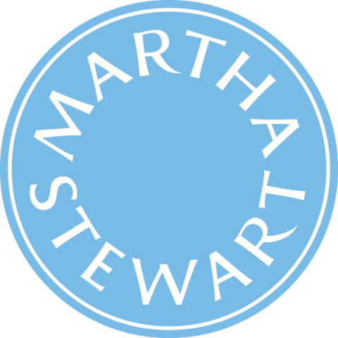

Experience
Senior Drupal Developer
DSFederal
Jan 2022 - Present
PHP 7/8, Drupal 6/7/8/9/10, ES6, WordPress 5, LAMP, Amazon EC2, Amazon RDS, Bamboo, Apache Solr, Varnish 6/7, Memcached, USWDS, SCSS, Composer, Git, NodeJS, Jenkins, Cypress, Linux
- Designed and implemented OOP-based PHP solutions in custom Drupal modules and themes, following SOLID principles and Drupal's service container architecture.
- Developed and maintained Drupal (8/9/10) and WordPress websites, implementing custom themes and plugins.
- Integrated Drupal's Plugin API, Entity API, and Hooks to extend core functionality efficiently.
- Created reusable ReactJS components following OOP patterns for frontend development.
- Implemented CI/CD pipelines using Acquia Pipelines, automating deployments and improving workflows.
- Successfully led Acquia to AWS migration project for ONC & ISA, ensuring seamless transition while minimizing downtime.
- Led design and implementation of disaster recovery and high availability solutions.
Senior Engineer
Arxscan
May 2017 - Dec 2021
LAMP, ES5/6, Angular, d3js, SVG, API, Tableau
- Resolved cross-browser compatibility issues in Angular applications, ensuring seamless user experience across platforms.
- Designed and developed reports using Tableau Desktop, transforming complex data into actionable insights.
- Developed custom data connectors to efficiently extract and integrate data from various sources.
- Built responsive UI components in Angular, adhering to modern design principles.
- Developed Python scripts to interact with Tableau Server, automating administrative tasks.
Senior Consultant
Sogeti
Dec 2015 - Feb 2017
Angular, Drupal 7, RestWS, Twig, Fast Importer, Drush, PHP, OOP, Behat, PHPUnit, Drupal Console, Automation testing, Drupal 8 API
- Designed, developed, and tested dynamic AngularJS applications, ensuring high performance and maintainability.
- Built RESTful APIs in Drupal 7 using the RESTws module, enabling seamless integration with Angular applications.
- Implemented automated testing strategies, including PHPUnit and Behat, to enhance code quality.
- Created Proof of Concepts for Twig template engine integration and fast data import into Drupal 7.
- Developed custom Drupal modules using Object-Oriented PHP and Drupal Console.
Drupal Developer
Digital Pulp
Feb 2015 - Nov 2015
Drupal 7, Node queue, Apache Solr, Panel Blocks, Search API, KnockoutJS, Git, HTML, CSS
- Integrated Apache Solr with Drupal 7, optimizing search functionality for improved performance and relevance.
- Developed a Search API using Knockout.js, enabling dynamic client-side search.
- Created panel blocks as a Drupal site builder, improving content layout and flexibility.
- Resolved merge conflicts and debugged critical issues, maintaining code stability.

Application Developer
Martha Stewart Living Omni Media
Jul 2014 - Oct 2014
APIs, A/B Testing, PHPStorm, XDebug, Chrome Debugger, Git
- Developed and optimized user registration APIs across multiple platforms.
- Led A/B testing initiatives for visual website testing, driving data-backed improvements.
- Contributed to code reviews and knowledge-sharing sessions.
IT Engineer
TCS
Sep 2012 - May 2014
HTML, CSS, JavaScript, MySQL, Optimization, UI/UX
- Analyzed and translated functional requirements into technical specifications.
- Led website optimization efforts, enhancing performance and user experience.
- Oversaw database optimization, focusing on performance, scalability, and efficient data management.
- Developed custom modules tailored to specific client needs.